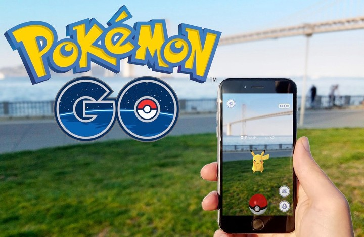
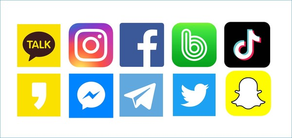
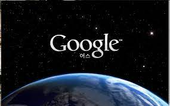
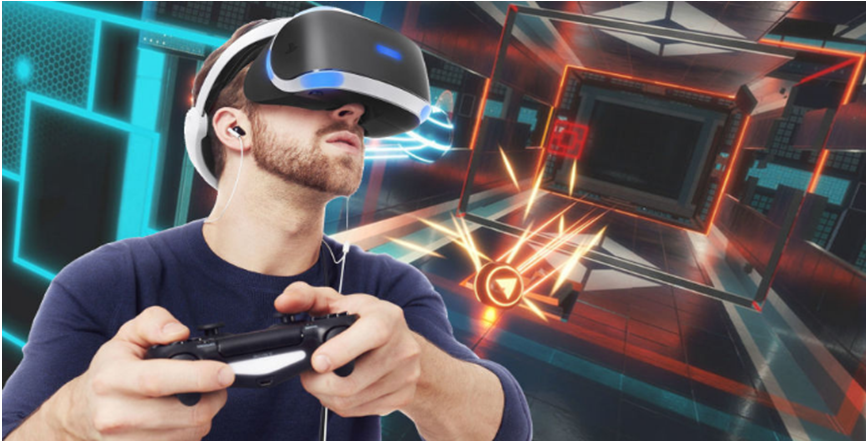

증강현실(Augmented Reality, AR)이란 개념은 90년대 후반에 처음 등장한 개념으로 현실세계 모습 위에 가상의 물체를 덧씌워서 보여주는 기술이다. 가상의 물체를 덧씌울 때 스마트폰, 컴퓨터, 기계장치, 설치물을 통해 구현된다. GPS 정보와 네트워크를 활용해 가상세계를 구축하며 몇 년 전 국내서 인기를 끌었던 “포켓몬고”가 대표적인 사례이다.

라이프로깅(Lifelogging)은 자신의 삶에 관한 경험와 정보를 기록하여 저장하고 공유하는 기술이다. 이 개념은 21세기 이전부터 존재하였으나 스마트폰의 확산에 따라 더욱 많이 활용되고 있다. 소셜미디어, SNS인 페이스북, 인스타그램, 트위터, 카카오스토리등이 라이프로깅에 포함된다.

거울세계(Mirror World)는 실제 세계의 모습, 정보, 구조 등을 가져가서 복사하듯이 만들어 낸 메타버스다. 가상지도, 모델링, GPS, 라이프로깅 등 다양한 기술을 활용해 실제 세계의 정보를 디지털 환경에 접목해 현실세계에 효율성과 확장성을 더해 만들어진다. 배달앱, 구글어스, 네이버맵등이 대표적인 예시이다.

가상세계(Virtual World)는 디지털 데이터로 구축한 가상세계로, 이용자의 자아가 투영된 아바타 간의 상호작용이 발생한다. 가상세계는 크게 분류하면 게임형태와 비게임형태로 나뉘는데 최근에는 게임형태 가상세계가 주목받고 있다. AR/VR 기술 발달에 따라 가상세계로의 관심을 높여주는 요인으로 작용하고 있다.
